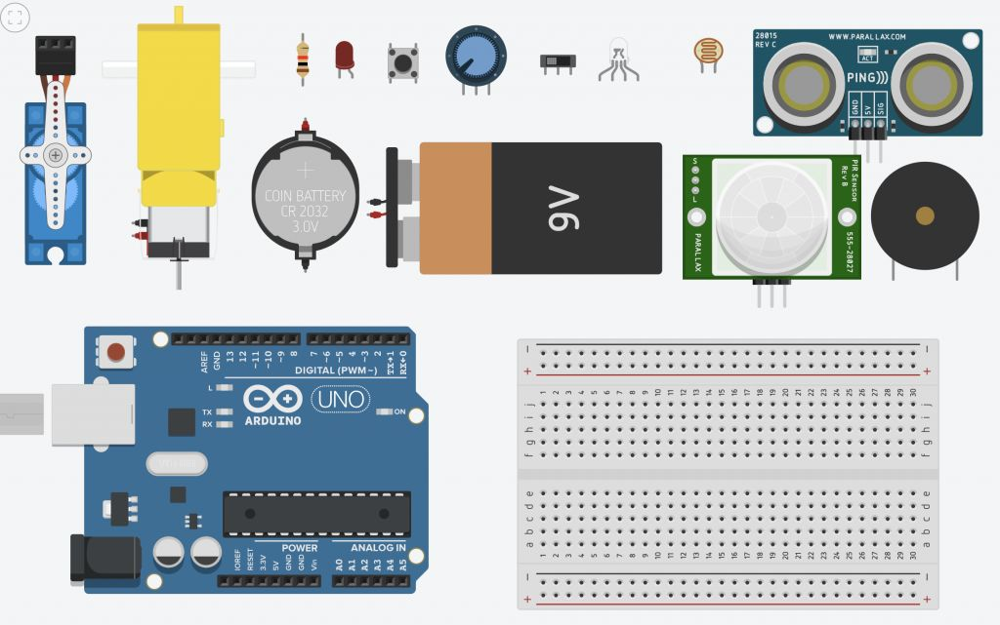

Tinkercad教师/学生免费帐号创建指南
【余老师10节3D建模微课】
【余老师微课】1 - 竹蜻蜓
【余老师点评作品】1 - 竹蜻蜓
【余老师微课】2 - 爱因斯坦小板凳
【余老师点评作品】2 - 爱因斯坦小板凳
【余老师微课】3 - 个性挂件（钥匙扣）
【余老师点评作品】3 - 个性挂件（钥匙扣）
【余老师微课】4 - 个性化泊车提醒牌
【余老师点评作品】4 - 个性化泊车提醒牌
【余老师微课】5 - 个性印章
【余老师点评作品】5 - 个性印章
【余老师微课】6 - 多肉植物花盆
【余老师点评作品】6 - 多肉植物花盆
【余老师微课】7 - 制作校徽
【余老师点评作品】7 - 制作校徽
【余老师微课】8 - 七巧板
【余老师微课】9 - 个性笔筒
Ctrl+D|Tinkercad超强智能复制功能分享
【余老师微课】10 - 狗年吉祥物
【余老师点评作品】10 - 狗年吉祥物
【Tinkercad寒假挑战赛】狗年/小狗 #2018dogyear
【颁奖】Tinkercad寒假挑战赛 #2018dogyear

【余老师20节电子电路微课】
【余老师暑期公益课】1 - 点亮LED灯
【余老师暑期公益课】2 - 给LED灯加一个开关
【余老师暑期公益课】3 - 初识Arduino
Tinkercad与你玩转Arduino
【余老师暑期公益课】4 - 呼吸灯
【余老师暑期公益课】5 - 炫彩RGB灯
【余老师暑期公益课】6 - 蜂鸣器作曲
【余老师暑期公益课】7 - Arduino按钮灯
【余老师暑期公益课】8- Arduino智能按钮灯
【余老师暑期公益课】9- 光敏灯
【余老师暑期公益课】10 - 旋钮灯
【余老师暑期公益课】11 - 人体红外感应灯
【余老师暑期公益课】12 - 舵机
【余老师暑期公益课】13 - 温度检测
【余老师暑期公益课】14 - 红外遥控接收
【余老师暑期公益课】15 - 红外遥控灯
【余老师暑期公益课】16 - 超声波传感器
【余老师暑期公益课】17 - 项目封装之发光LED
手把手教程 | 用Tinkercad点亮模型！
【余老师暑期公益课】18 - 项目封装之音乐盒
【余老师暑期公益课】19 - 解密猜拳神器
【余老师暑期公益课】20 - 课程小结